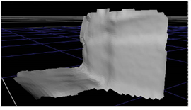

PointCloudGenerator can create meshes from grouped points in the point cloud that you can use as stand-alone 3D objects, for example, in 3D modeling. You can also use these meshes to quickly project the 2D sequence onto the mesh using the Project3D node.
PointCloudGenerator meshes are based on the Poisson Surface Reconstruction calculation method. The original source code and paper were created by Michael Kazhdan, Matthew Bolitho, and Hugues Hoppe (see http://www.cs.jhu.edu/~misha/Code/PoissonRecon/ for more information).
To create a mesh from a group:
| 1. | On the Groups tab, select the required group(s) from the Groups list. |
You can mesh a single group or all the groups available in the list.
| 2. | Click Bake Selected Groups to Mesh. |
A mesh is created automatically using the information from the PointCloudGenerator node.
NOTE: You can use the resulting group mesh node in Nuke as well, though you can’t edit the geometry.
| 3. | Proceed with Adding Texture to a Mesh. |
Many factors influence the quality of any mesh, chief among which are the contents of the scene and the camera track obtained from the sequence. If you consider a simple scene, such as that shown in the example images, the resulting mesh can be quite accurate.
|
 |
| A mesh of a simple sequence. |
|
|